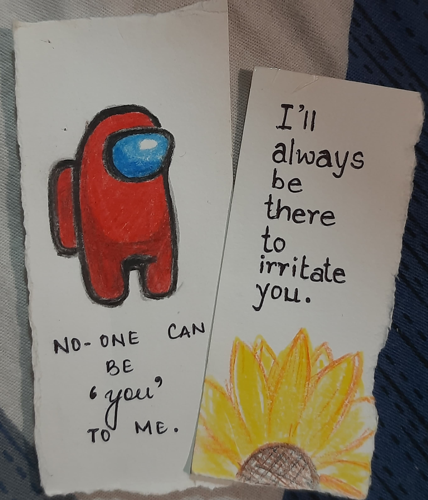

Chapter 4: Conclusion?
I know I’ve fallen so badly in your eyes that no apology, no paragraph, no words will ever be enough to make you forgive me. I know I don’t matter to you anymore, and in the end, I’ll just be another “diploma classmate” to you. But to me, you’ll always be in my heart as the first female who truly understood me, who was there for me when I was at my lowest. No matter how things have turned out, I always thought of you as more than just a friend. I deeply loved you then, and now, after realizing how wrong I was, that feeling hasn’t changed. But I know, for you, that love has no meaning anymore. Still, I always cared for you, and I always will.
I wish things could have been different, that I could have been better, that we could have been more than just friends. But what’s done is done, and I take full responsibility for ruining everything. I’m sorry if all of this just confuses you more, this khichdi of emotions, these words that probably don’t mean anything anymore. I know you never saw me that way, that you have feelings for someone else, or maybe you’re even dating someone now. And I understand.
I was never the guy with dashing looks, a charming personality, or a perfect body. The only thing I ever had for you was endless care and love, something I would have given you until my very last breath. But I don’t think I deserve a second chance from you. I messed up too badly and i'll never be able to bring back the trust and bond we had during early semesters. And for that, I’m truly, deeply sorry. I don't expect a reply or anything in return from you, all i could wish for is to bring back that old bond i had with you but ig it's impossible. You've changed, i've changed, you've got better and more trustworthy friends/ partners and i am glad that you're progressing ahead.
I am very happy and proud of you and i'll always cheer you from your back. (last hidden letter is I) As i always say, if you ever need anything, want some help or want to talk to somebody i'm just a call or message away. I know tu ab karegi nahi but just know that you still have me even if you don't trust me now.
Really sorry agar ye sab zyada dramatic lag raha ho, I have been sick for the past month so yeah dimaag thoda dheela hai and tha...
Sorry for failing your trust and if i said too much or assumed that you will never do this and that in these chapters, purani aadat hai to doubt and lose people isliye advance me hi hope haar jaata hu taaki end me disappointment na jelni pade.
Listen to yourself and my bad for seeing you more than a friend, thoda lonely lonely raha hu isliye never thought saamne wala kya sochta hai mere baare me. Again, i don't expect forgiveness or a reply from you kyuki since the start it was my fault and i deserve it. Tera gussa jaiz hai and i'm really sorry for it.
Final conclusion? wo hidden letters yaad honge right? I am glad that god sent you in my life and completely flipped it upside down. I pray to God everyday (legit mai 6 mandir ghum ke aya only for you) that if i had 7 lives, i'd wish to be with you forever in each life. I'd never misplace your trust, take you for granted, or let it go because losing you once was already more than I could bear.
To the person i'll always love and want in my life,and my heart would never forget,

Also sorry for being such a creep :/
Back to Home